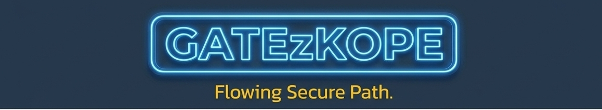

Flowing Secure Path.

เราเชี่ยวชาญด้านระบบควบคุมการเข้า-ออก (Access Control) และระบบความปลอดภัยของพื้นที่ภายในองค์กรของคุณ
ให้เช่าใช้และวางระบบ Swing Gate, Turnstile และ Barrier คุณภาพสูง รองรับการทำงานร่วมกับระบบรักษาความปลอดภัยทุกรูปแบบ
บริการยืนยันตัวตนผ่านประตูอัตโนมัติหลากหลายรูปแบบ เพื่อความปลอดภัยสูงสุดของการเข้าถึงพื้นที่ของคุณ
มี Software เฉพาะทางเพื่อเชื่อมต่อระบบ Hardware เข้ากับฐานข้อมูลเพื่อบันทึกข้อมูลประสิทธิภาพ